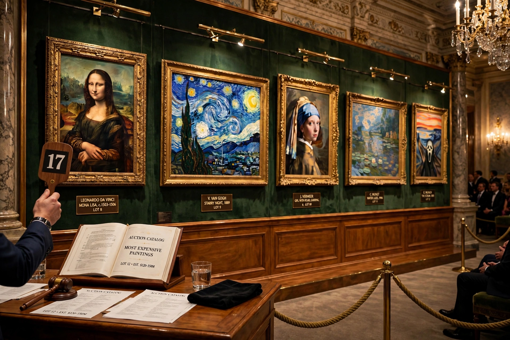

Highest price: Salvator Mundi, $450.3 million (2017).
This is a list of the highest known prices paid for paintings, mostly at auction or reported private sales, adjusted figures varying with inflation.
| Painting | Artist | Price | Date |
|---|---|---|---|
| Salvator Mundi | Attributed to Leonardo da Vinci | $450.3M | 2017 |
| Interchange | Willem de Kooning | c. $300M (private) | 2015 |
| The Card Players | Paul Cézanne | c. $250M+ (private) | 2011 |
| Nafea Faa Ipoipo | Paul Gauguin | c. $210M | 2014 |
| Number 17A | Jackson Pollock | c. $200M | 2015 |
| Les Femmes d'Alger (Version 'O') | Pablo Picasso | $179.4M | 2015 |
| The Standard Bearer | Rembrandt | c. $198M equiv. | 2022 |
| Shot Sage Blue Marilyn | Andy Warhol | $195M | 2022 |
| Nu Couché | Amedeo Modigliani | $170.4M | 2015 |
| Masterpiece | Roy Lichtenstein | $165M | 2017 |
Older record sales include Van Gogh's Portrait of Dr. Gachet (1990) and Renoir's Bal du moulin de la Galette. See Salvator Mundi.